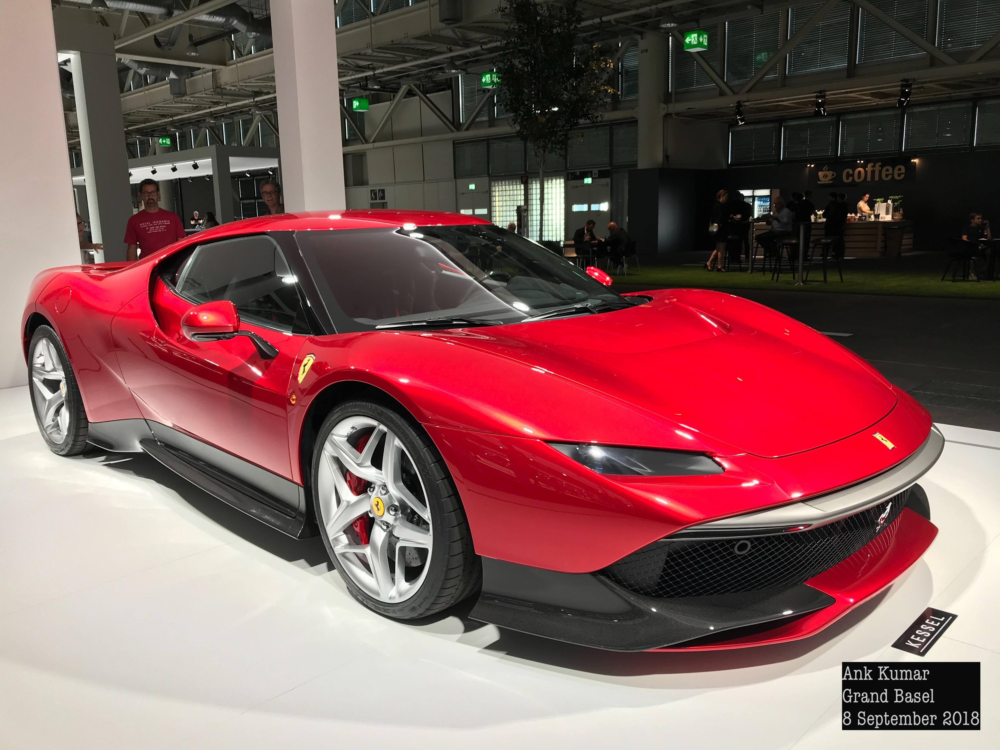
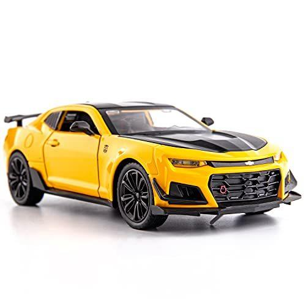

|
Ford Mustang El Ford Mustang es un icónico automóvil deportivo fabricado por la compañía estadounidense Ford desde 1964. Conocido por su diseño musculoso y estilo emblemático, el Mustang ha sido un símbolo de la cultura automotriz y la velocidad en los Estados Unidos y en todo el mundo. Su valor aproxima a $30,000 usd. |
|  |
Ferrari SP-38 El Ferrari SP38 es un automóvil deportivo de edición limitada creado por el fabricante italiano Ferrari. Fue presentado en 2018 como parte del programa "One-Off" de Ferrari, que ofrece a los clientes la oportunidad de personalizar y diseñar un automóvil único y exclusivo basado en una plataforma existente de Ferrari. Su valor aproximado $240,000 eur. |
|  |
Chevrolet Camaro El Chevrolet Camaro es un icónico automóvil deportivo fabricado por la marca estadounidense Chevrolet, que es una división de General Motors. Desde su introducción en 1966, el Camaro ha sido un competidor directo del Ford Mustang y ha sido apreciado por su rendimiento, diseño distintivo y contribución a la cultura automotriz. Su valor aproximado: $25,000 usd. |

|
Porsche 911 Turbo El Porsche 911 Turbo es una línea de automóviles deportivos de alto rendimiento fabricados por Porsche AG, una reconocida marca alemana de automóviles deportivos y de lujo. Desde su introducción en la década de 1970, el Porsche 911 Turbo ha sido un ícono en el mundo de los automóviles deportivos y ha evolucionado a lo largo de varias generaciones para combinar lujo, rendimiento y tecnología de vanguardia. Su valor varia entre los $100,000 usd. |